Linear algebra for data science, Part 2
PSTAT 234 (Fall 2025)
PCA: Visualizing Component Contributions
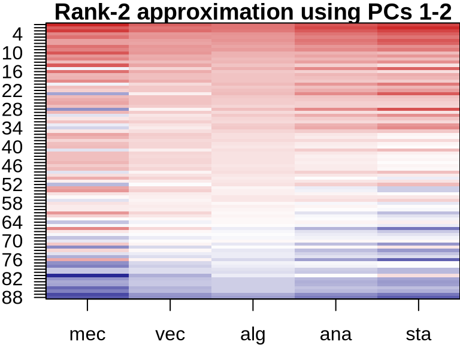
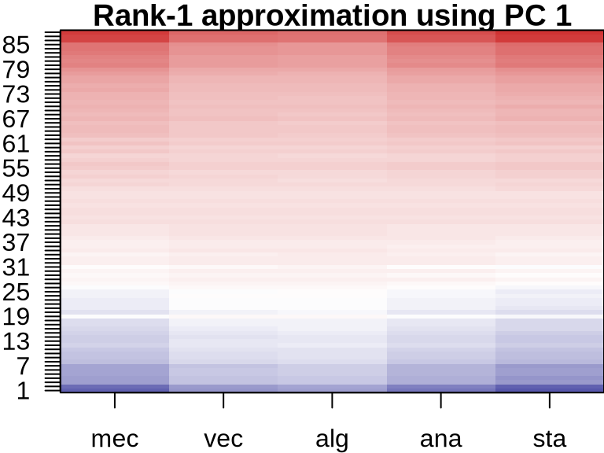


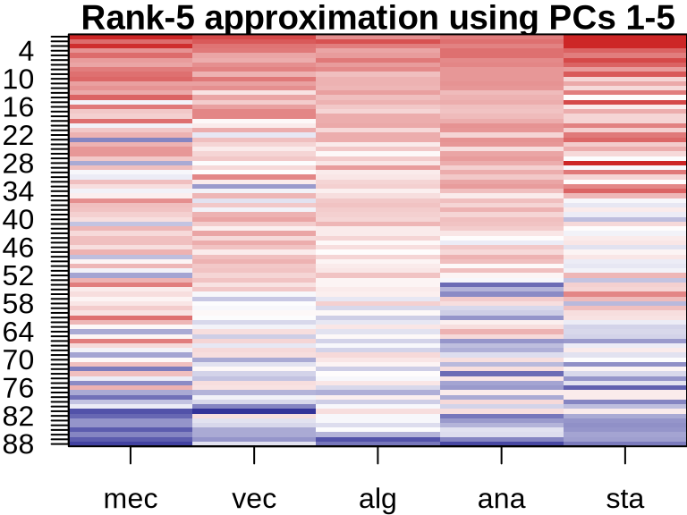

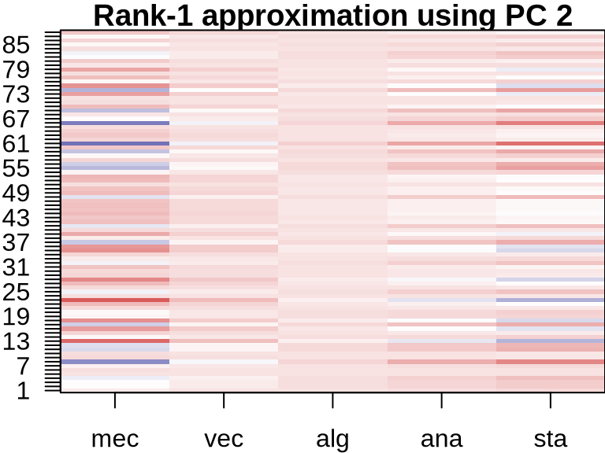
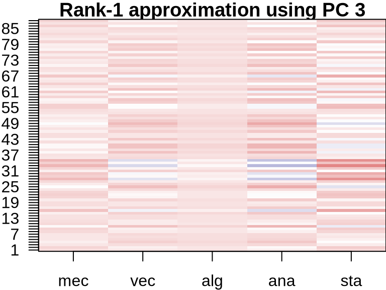
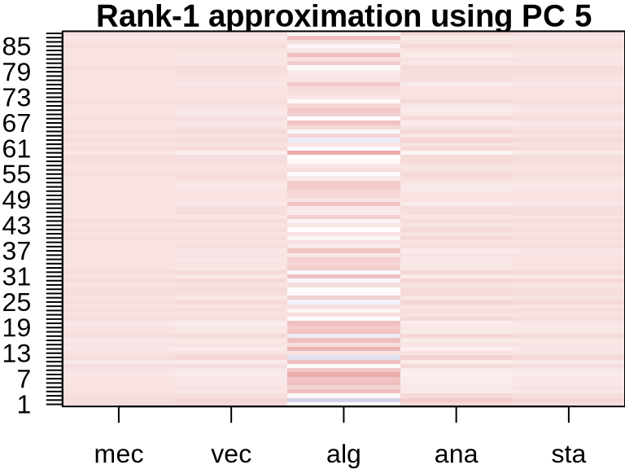
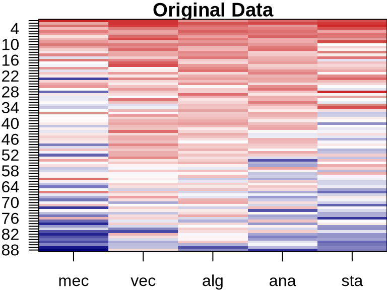


ICA: Visualizing Component Contributions
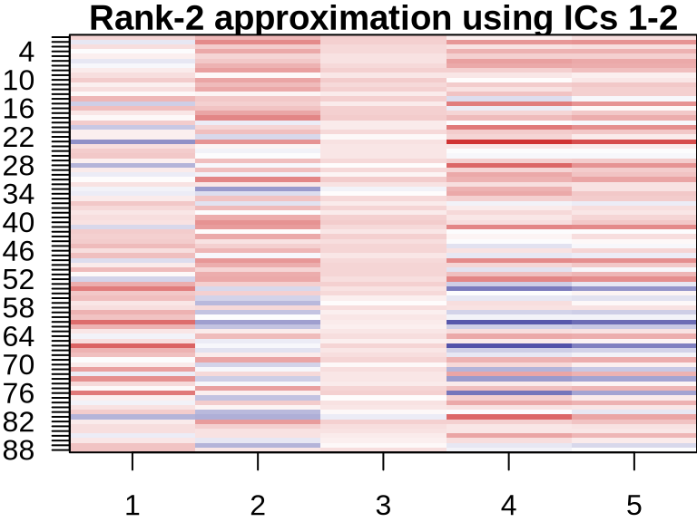
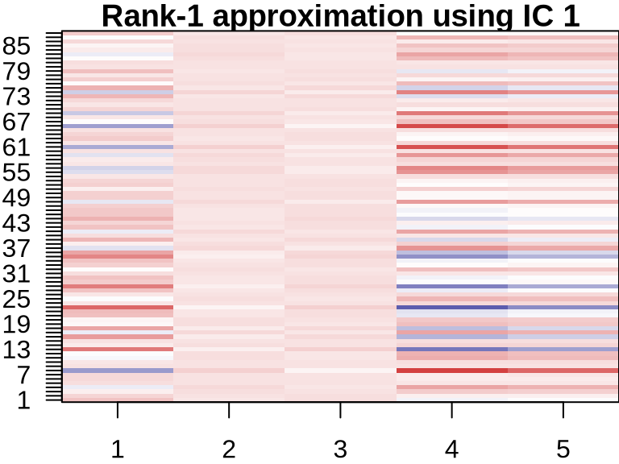
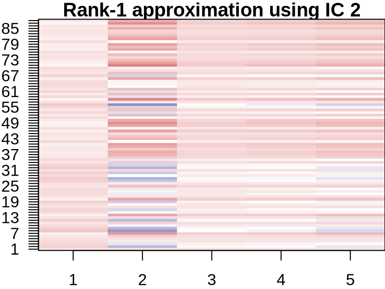


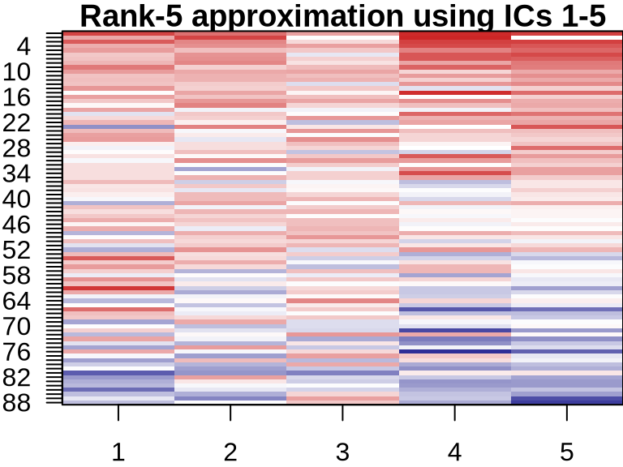


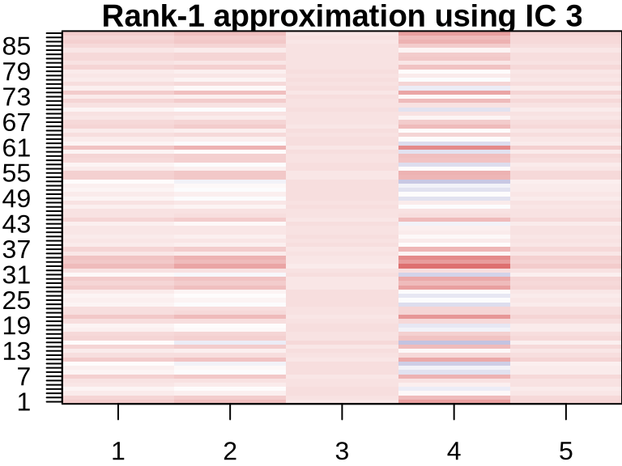
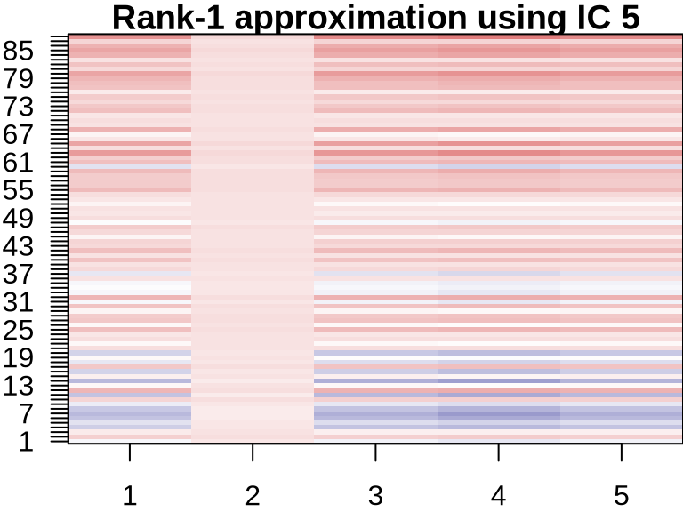
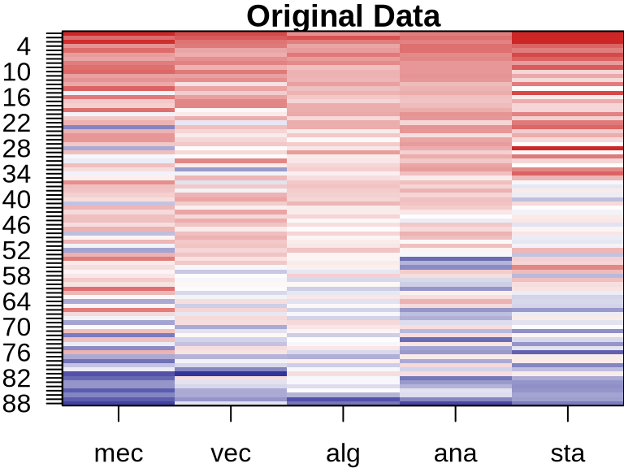


NMF: Visualizing Component Contributions
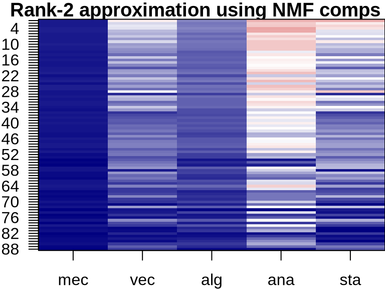
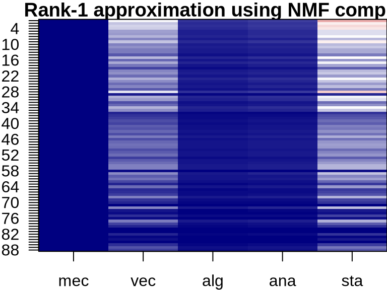


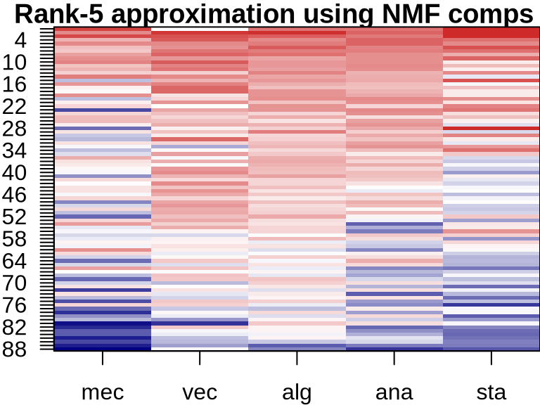

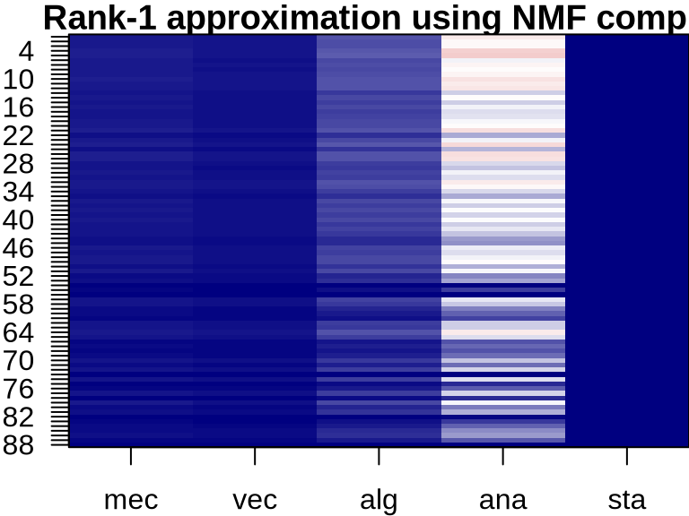
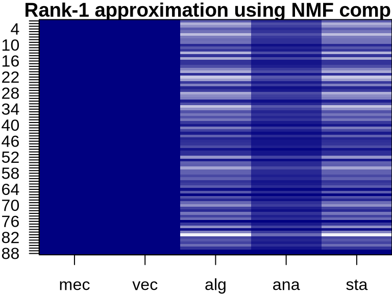
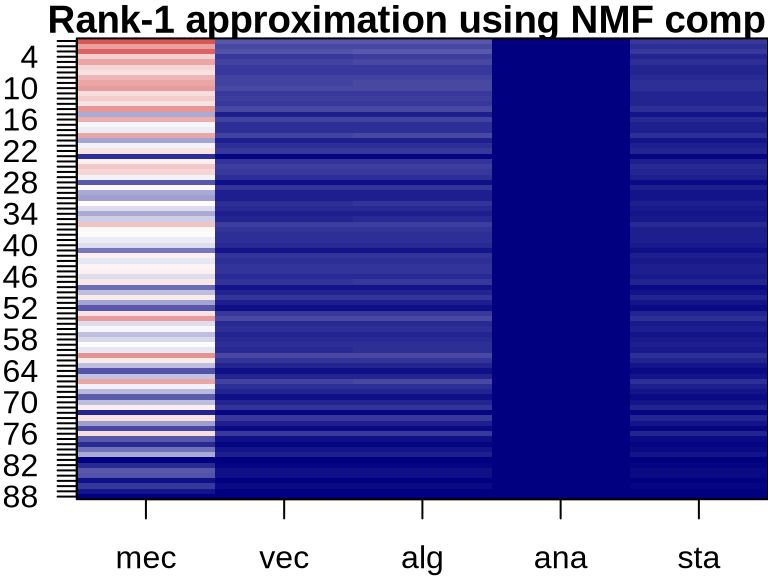
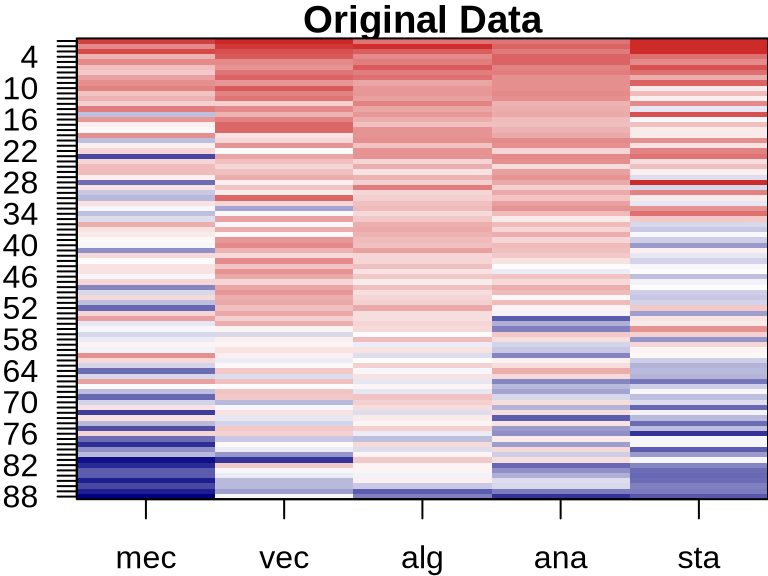